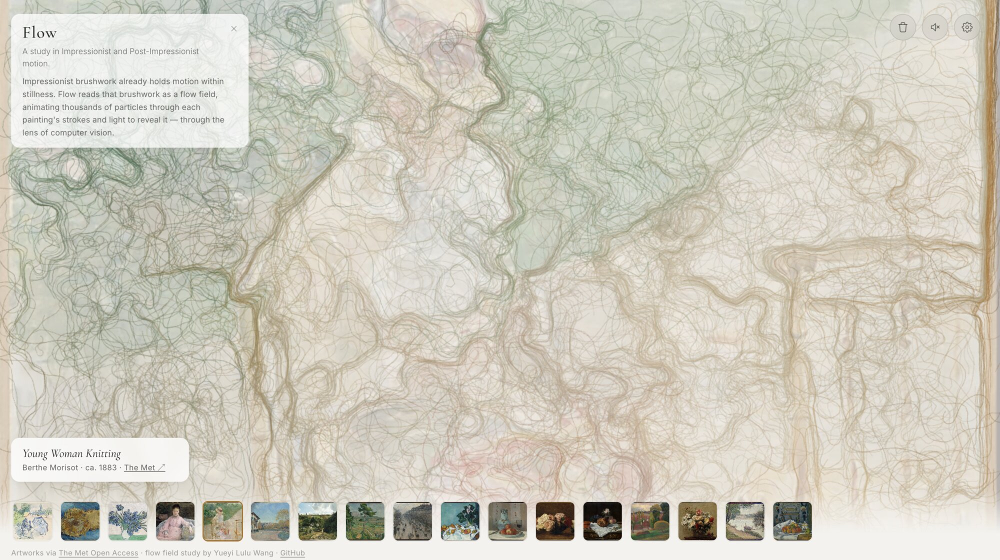

Flow
A study in Impressionist motion.
An interactive web piece that traces thousands of particles through each painting's brushwork and light. Visitors can move between paintings in the gallery, each one generating its own particle flow in real time.
Inspiration
Impressionist and Post-Impressionist painters built motion into their canvases by hand — short, directional strokes standing in for wind and light. The project began as an assignment in my Creative Coding class, and grew into a way to sit at the overlap of my two majors: reading a painting the way a computer vision system would, for an aesthetic exploration.
Method
Flow started in Processing, prototyped for a Creative Coding class assignment. The core idea was to turn a static image into a flow field — sampling brightness, color, or edge direction at each point in the painting and using that as a direction vector for motion. Early testing focused on how particle count, step size, and field resolution changed the result, tuning the system until the movement read as painterly rather than chaotic or just noisy.

Note 1

Note 2
The piece was later rebuilt in p5.js to move it from a desktop sketch into something browser-based and shareable.
Demo 2024 (1)
Demo 2024 (2)
Originally, the source painting was fixed — one image, one flow field, no interactivity. For this version, I redesigned the interaction in Figma and rebuilt the piece so visitors can switch between several paintings in a gallery, each generating its own particle flow live.